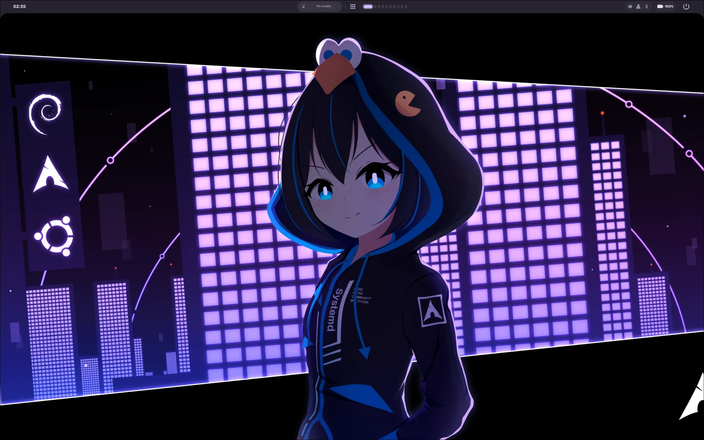
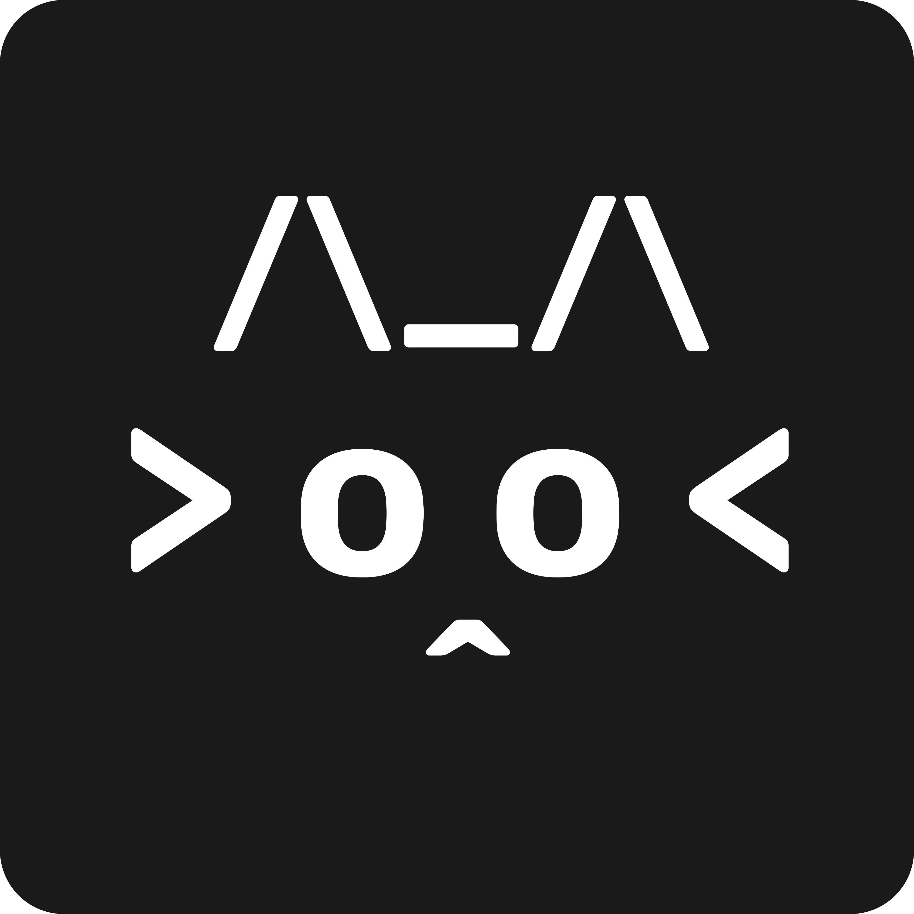

01 AI-GENERATED SHOWCASE Take a look ↗LINUX / EXPERIMENTAL SHELL
Voidline
An AI-generated showcase for a cohesive Material-inspired desktop experience and shell around Hyprland, planned across Quickshell, Python, Lua, and Rust.
Hobby developer / curious creator
I make tools and experiments for myself first, then share the useful and interesting ones for everyone to explore.
See my projects
I’m Okami, a beginner hobby developer who enjoys turning personal ideas into small working projects. I’m still learning, and every project is a chance to discover something new at my own pace.
I build for my own use first, then make the results public so anyone can try, learn from, or adapt them. On YouTube, I share a mix of gaming videos and showcases of project features and progress. My Twitch streams are a separate hobby and are not about coding.
WHERE PROJECTS BEGIN
Usually with a personal idea that sounds fun or useful to explore. I take it at my own pace, shape it around how I would use it, and share it when it becomes something worth showing.
Things I started for my own setup, interests, or curiosity and decided to make public.

01 AI-GENERATED SHOWCASE Take a look ↗LINUX / EXPERIMENTAL SHELL
An AI-generated showcase for a cohesive Material-inspired desktop experience and shell around Hyprland, planned across Quickshell, Python, Lua, and Rust.

02 IN DEVELOPMENTDISCORD / IN DEVELOPMENT
An in-development Discord bot planned around moderation, tickets, music, leveling, temporary voice channels, and flexible hosting options.
PERSONAL UTILITY / AUTOMATION
A small utility I made for my own setup to send a Discord notification when a stream goes live, then shared for anyone else who finds it useful.
Have feedback, a question about one of my projects, or just want to compare Linux setups? My inbox is open.